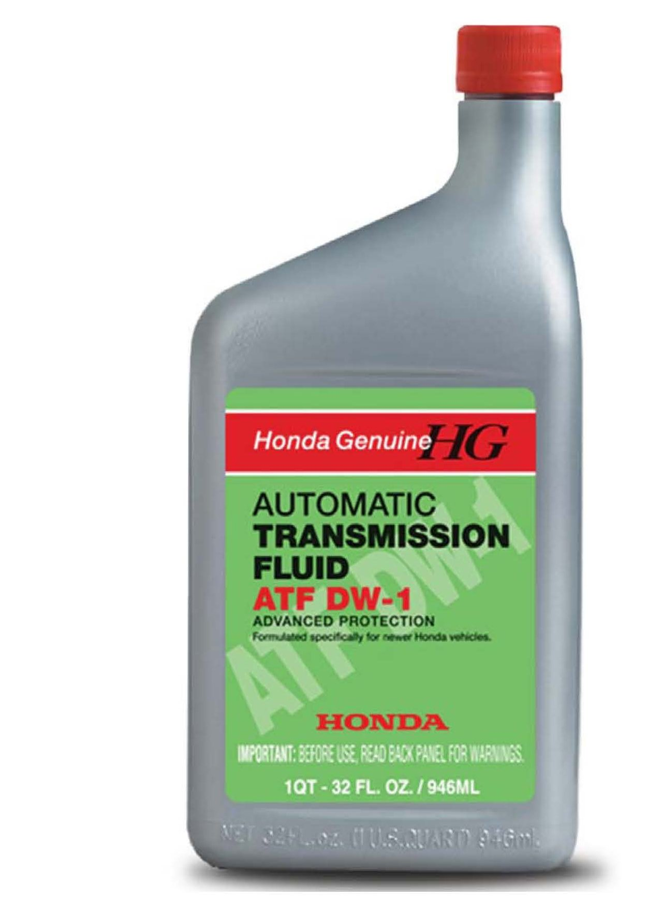

A/T - New ATF DW-1 Available
ServiceNews ArticleNov 2010
Currently Applies To: General Information
New ATF DW-1 Now Available

Honda parts stock has a new ATF available. It's called ATF DW-1 and it replaces ATF Z1. It's been designed to improve transmission performance when it's cold, which helps with fuel economy.
ATF DW-1 is the factory fill for all '11 Honda models. Eventually it will be our only ATF, but you can keep using ATF-Z1 in all '10 and older models for now. However, make sure that you DO NOT use ATF-Z1 in any '11 and newer models.
ATF DW-1 is available in 1-quart bottles (P/N 08200-9008).

Disclaimer